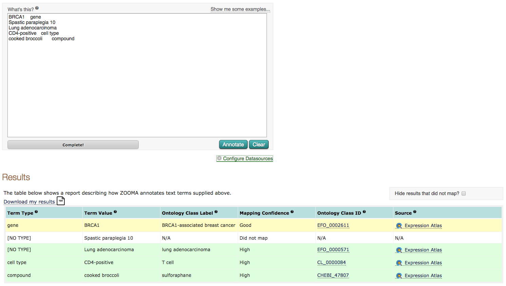
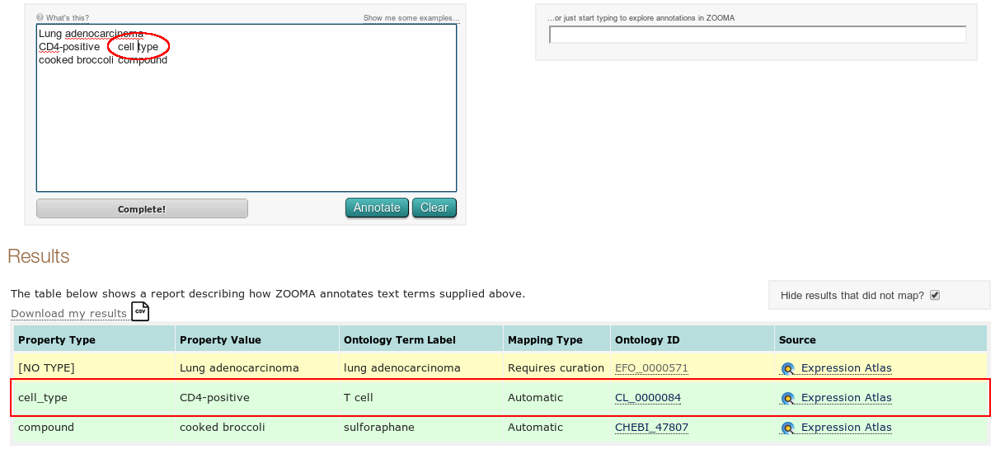

Getting Started
Basics
The ZOOMA homepage contains a text box that allows you to discover possible ontology mappings for your terms. Try clicking the "Show me some examples..." link above this box - it should populate the box with three example terms. Hit "Annotate". A progress bar appears, showing you when ZOOMA has mapped your terms.

Once complete, you should see a table of results. Green shows that ZOOMA could map this term "automatically", or with a high degree of confidence. Yellow shows that ZOOMA was less sure, and results might need further curator intervention to determine if ZOOMA is correct.
Let's look at these examples in a little more detail. The third row of your results should be listed in green - property type "compound" and value "cooked broccoli". ZOOMA mapped this term with a high degree of confidence, in part because we could supply some additional context by adding a type to our search. If you look at the text box, you'll see when you clicked "Show me some examples..." it populated a type after the value, with a tab between them.
If we add a type to one of the other examples, we can improve our confidence. Modify the input box - after the term CD4-positive, put a tab and add "cell type". Now hit "Annotate" again. You should see that the second result in our table has gone green.
Worked Examples
Below are some example inputs you can run against ZOOMA. These datasets are all taken from ArrayExpress. You can open any of these files and copy and paste everything into the ZOOMA search box to see what coverage you get.
ZOOMA Workshop Evaluation Procedure
Copy and paste the data from one of the example input files, above, into the ZOOMA search box. Hit annotate and check you have some sensible looking results.
We're going to export and inspect ZOOMA's output to see how well it did. Above your table of results, you should see an option to "Download my results". If you click this, you should be able to open a complete report from ZOOMA in a tab delimited text format in your browser.
Either right-click this link, then "Save as..." or else open the link and copy and paste the data. Open it in your spreadsheet editor of choice (Excel or Google Drive should work fine). We'd like you to see if you agree with ZOOMA's results by adding a new "CURATOR" column to this spreadsheet.
For example, you might get ZOOMA output like this:
| PROPERTY TYPE | PROPERTY VALUE | ONTOLOGY TERM LABEL(S) | MAPPING TYPE | ONTOLOGY TERM(S) | SOURCE(S) |
|---|---|---|---|---|---|
| Organism | Arabidopsis thaliana | Arabidopsis thaliana | Automatic | NCBITaxon_3702 | http://www.ebi.ac.uk/arrayexpress/ |
If you agree that the given property type/value pair should match to the given ontology term, you should modify this row to look like this:
| PROPERTY TYPE | PROPERTY VALUE | ONTOLOGY TERM LABEL(S) | MAPPING TYPE | ONTOLOGY TERM(S) | SOURCE(S) | CURATOR |
|---|---|---|---|---|---|---|
| Organism | Arabidopsis thaliana | Arabidopsis thaliana | Automatic | NCBITaxon_3702 | http://www.ebi.ac.uk/arrayexpress/ | y |
If you think this mapping is wrong, change the "y" value to "n"
Alternatively, if ZOOMA suggests a mapping of "Did not map", for example...
| PROPERTY TYPE | PROPERTY VALUE | ONTOLOGY TERM LABEL(S) | MAPPING TYPE | ONTOLOGY TERM(S) | SOURCE(S) |
|---|---|---|---|---|---|
| StrainOrLine | BALB/c (H-2Kd, Thy-1.2) | N/A | Did not map | N/A | N/A |
...but you think an ontology term DOES exist for this term that ZOOMA should have detected, you would modify the spreadsheet to look like this:
| PROPERTY TYPE | PROPERTY VALUE | ONTOLOGY TERM LABEL(S) | MAPPING TYPE | ONTOLOGY TERM(S) | SOURCE(S) | CURATOR |
|---|---|---|---|---|---|---|
| StrainOrLine | BALB/c (H-2Kd, Thy-1.2) | N/A | Did not map | N/A | N/A | n |
If ZOOMA suggests "requires curation" and the correct hit is present, you can put a "y" next to that hit.